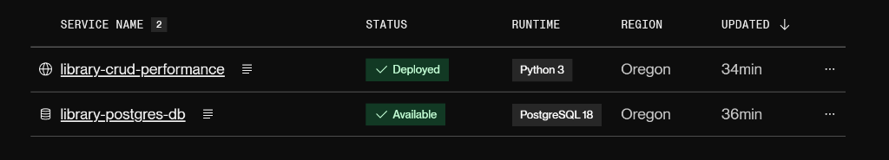
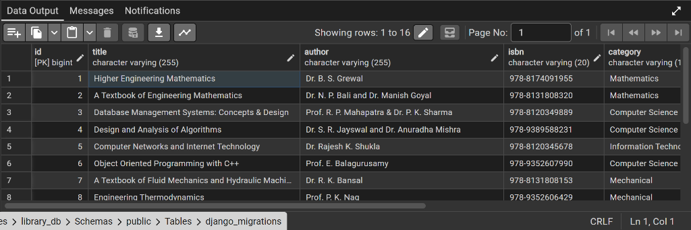
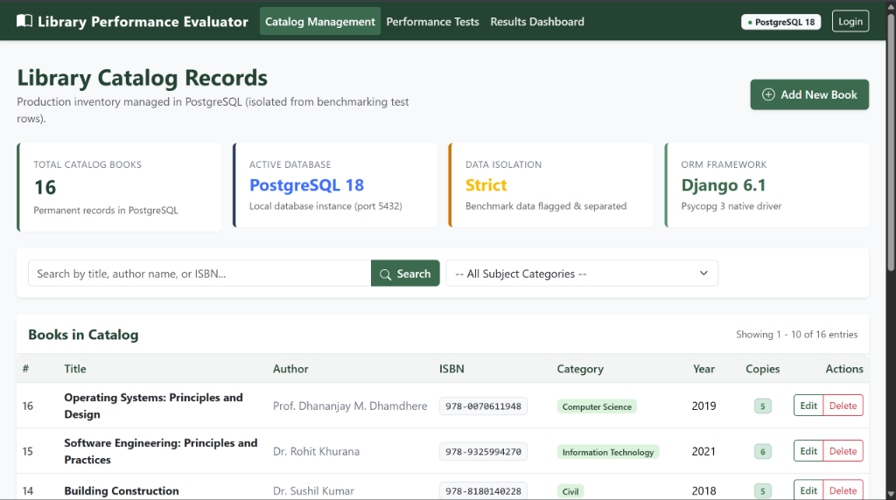
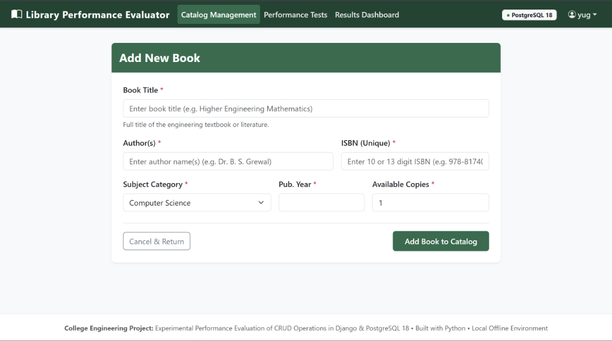
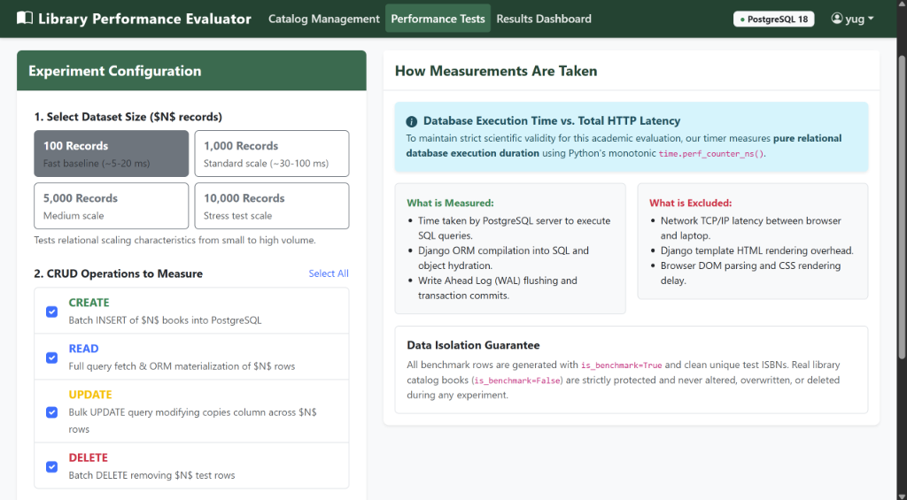
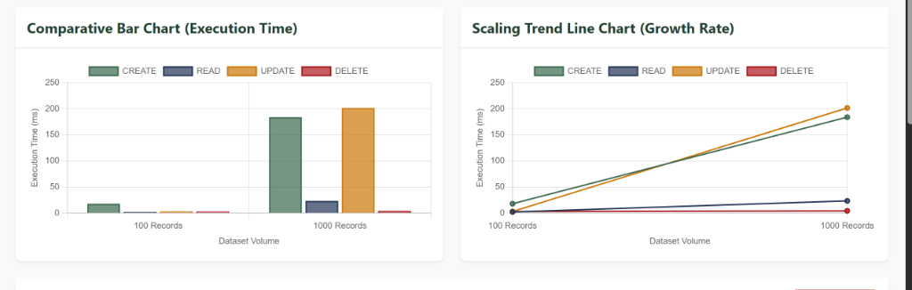

SUBMITTED BY:
We hereby declare that the project entitled "Experimental Performance Evaluation of CRUD Operations in a Django-Based Library Record Application" submitted in partial fulfillment of the degree requirements is an authentic record of our own work carried out under faculty guidance.
The matter embodied in this project report has not been submitted by us for the award of any other degree or diploma to any other University or Institute.
Understanding database latency and scaling characteristics is essential for developing performant, scalable web applications. This project implements a full-stack web application developed using Python, the Django web framework, and the PostgreSQL 18 relational database management system to experimentally evaluate the performance of Create, Read, Update, and Delete (CRUD) operations across dataset sizes of 100, 1,000, 5,000, and 10,000 records.
The application combines library catalog management (with validation, pagination, and multi-criteria search) with a dedicated performance benchmarking engine. Using a high-resolution monotonic timer (time.perf_counter_ns()), the system isolates pure database execution from browser network delays. The application has been deployed live on Render.com backed by a cloud-hosted PostgreSQL 18 instance. The experimental results show that batch DELETE is the fastest operation (~11.19 ms for 10,000 rows), while CREATE scales linearly (~444.26 ms for 10,000 rows) due to Write-Ahead Logging (WAL) and B-Tree index updates for unique keys.
Relational Database Management Systems (RDBMS) like PostgreSQL are the foundational layer of modern software architectures. In library cataloging, maintaining record integrity, unique ISBN constraints, and fast search capabilities are paramount. This project combines full-stack web development with empirical performance evaluation to evaluate how database latency behaves as record volume increases by 100x.
Developers commonly utilize Object-Relational Mappers (ORMs) without analyzing how queries behave under increasing dataset scales. Without empirical benchmarking across different scales (100 to 10,000 records), it is difficult to determine whether bulk insertions, object hydration, or transaction log commits form the primary operational bottleneck.
time.perf_counter_ns().| Component | Technology Specification |
|---|---|
| Operating System | Microsoft Windows 10 / 11 (64-bit) |
| Backend Framework | Django 6.1.2 (Python 3.14.6) |
| Database Management System | PostgreSQL 18.6 (Port 5432) |
| Database Driver | Psycopg 3.3.6 (C-binary adapter) |
| Production WSGI Server | Gunicorn 26.2.0 + WhiteNoise 6.12.0 |
| Frontend Libraries | HTML5, CSS3, Bootstrap 5.3, Chart.js 4.4 (Offline Bundled) |
The project is deployed on Render.com using an Infrastructure-as-Code Blueprint (render.yaml). The architecture provisions a managed PostgreSQL 18 instance connected to a Python WSGI web service.

The application utilizes two primary relational tables: library_book for book records and library_benchmarkresult for storing empirical performance logs.
| Table Name | Key Columns | Primary Key | Unique Constraints |
|---|---|---|---|
library_book |
title, author, isbn, category, publication_year, available_copies, is_benchmark | id (BIGSERIAL) |
isbn |
library_benchmarkresult |
operation, dataset_size, trial_number, execution_time_ns, database_name, notes | id (BIGSERIAL) |
None (Log table) |

The library interface provides responsive browsing with pagination and multi-criteria searching by title, author, or ISBN using Django's Q filter expressions.

Book insertion is handled by book_create backed by a Django ModelForm enforcing 10- or 13-digit ISBN uniqueness, publication year bounds, and positive inventory counts.

The benchmark suite isolates pure database execution time using Python's hardware-level monotonic clock time.perf_counter_ns():
start_ns = time.perf_counter_ns()
Book.objects.bulk_create(records, batch_size=1000)
execution_time_ns = time.perf_counter_ns() - start_ns

| CRUD Operation | 100 Records | 1,000 Records | 5,000 Records | 10,000 Records |
|---|---|---|---|---|
| CREATE (Batch Insert) | 7.65 ms | 47.39 ms | 236.12 ms | 444.26 ms |
| READ (Query & Materialize) | 1.88 ms | 7.34 ms | 37.16 ms | 152.32 ms |
| UPDATE (Bulk Modify) | 1.89 ms | 16.26 ms | 66.20 ms | 221.07 ms |
| DELETE (Batch Delete) | 0.85 ms | 1.60 ms | 4.00 ms | 11.19 ms |

xmax) in a single transaction without hydrating Python objects.The project successfully accomplished both of its foundational goals: delivering a complete, secure library record management application and empirically evaluating relational database scaling. Using PostgreSQL 18 and Django 6.1, the system proved that batching and indexing maintain predictable, sub-second execution even under 10,000 records on standard laptop hardware.